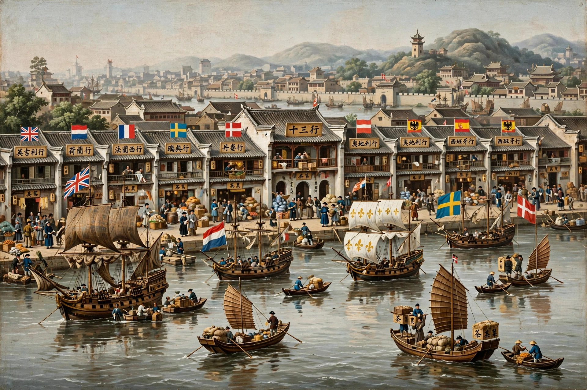

| Canton System | |
|---|---|
 | |
| Period | 1757 – 1842 |
| Location | Canton (Guangzhou), Qing China |
| Key bodies | Cohong guild; Hoppo (customs superintendent) |
| Ended by | First Opium War; Treaty of Nanking (1842) |
The Canton System (1757–1842) was the arrangement by which the Qing dynasty of China regulated and controlled all foreign trade during the later 18th and early 19th centuries. From 1757, by decree of the Qianlong Emperor, Western maritime trade was confined to the single southern port of Canton (Guangzhou), where it could be conducted only through a licensed monopoly guild of Chinese merchants, the Cohong, under the supervision of the Canton customs superintendent (the "Hoppo"). The system lasted until the First Opium War forced its abolition under the Treaty of Nanking in 1842.
Foreign ships anchored at Whampoa, downriver from Canton; their crews were generally not permitted up to the city. Business was done in the Thirteen Factories, a row of warehouses and offices outside the city walls on the Pearl River, rented from the Cohong. Foreign merchants could deal only with Cohong merchants (such as the great hong merchant Howqua), who were responsible for their conduct and debts and who guaranteed customs duties. Trade was seasonal: foreigners arrived with the monsoon in summer and were required to leave for Macao in the off-season; foreign women were barred; communications with officials had to pass through the hong merchants, and only as "petitions".
Canton exported tea, silk and porcelain in exchange largely for silver, since China wanted few Western goods — the imbalance at the heart of Qing foreign policy confidence, expressed in the Qianlong Emperor's famous 1793 edict to George III (rejecting the Macartney Embassy's requests) that China possessed all things and needed nothing from "barbarians". From the early 19th century British and American merchants increasingly smuggled Indian opium into China (outside the Canton system, via Lintin Island) to reverse the silver flow, corrupting officials and spreading addiction. Commissioner Lin Zexu's confiscation and destruction of opium at Humen in 1839 precipitated the First Opium War (1839–1842). The Treaty of Nanking abolished the Cohong monopoly, opened five treaty ports, ceded Hong Kong to Britain, and inaugurated the "unequal treaty" era — replacing the Canton System with the treaty-port system that endured until 1943.
See also: Unequal treaty · Sino-Russian border conflicts · First Opium War · Guangzhou